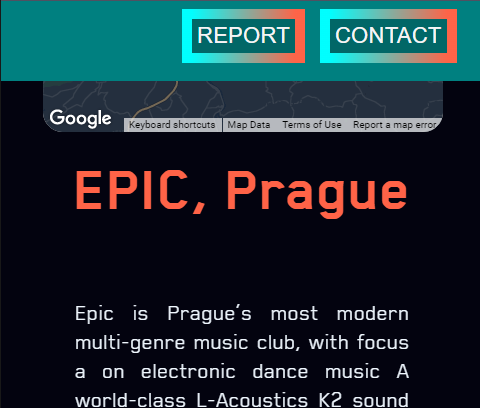

THE REPORT
1. Problem Description
What's the site about?
When I went into the Web-Development lecture where our assignment was announced,
I knew almost immediately what I wanted to do it on! For this website, I wanted
to try achieve an edgier and more Cyberpunk aesthetic.
My brother showed me some
old pictures of various clubs he went to while in France. It was here that I realised
that Nightclubs fitted this aesthetic perfectly! And so, I decided to do my website on them.
Who will use it?
I imagine that the main users who will use this site will be younger people, mostly students
and graduates, all looking for a fun holiday away visiting the best nightclubs that Europe
has to offer, which isn’t difficult as Europe is home to so many establishments that including
them all would be nearly impossible in the time that I had!
Why was the site made?
A huge reason why I like the idea of this site is because during the first stages of
the Covid-19 epidemic, mental health became a huge problem for so many people as
seen in the reports provided below, from kids not being able to see their best
friends, families being split apart, abusive families being stuck together, and
too many other causes.
We all remember the first time we had a social outing
after restrictions eased, and how nice and liberating it was to see your best friends
again and be coming out of isolation. I like the idea of this site because hopefully
it will help the mental wellbeing of someone after a year of mental anguish.
Because if even one person were to go through the integrated Map, and get a boost of excitement
and happiness looking at the accompanying pictures and videos of a fun looking night
out nearby, seeing where they could plan a trip away to, that would be more than enough
for me. These past few years have been so difficult, we all deserve that boost of happiness
That's why I made this site...
That, and I really liked the aesthetic that I could have gone for.
2. Research
Similar Websites?
While looking up reviews for the various clubs throughout Europe, I came
across a site called Nightflow.
It seemed to share much of the same purpose as my own site. After all, both sites
served the purpose of showing the location and review of the top nightclubs around Europe.
Where Nightflow seemed to do a better job than
my site, was the selection of clubs it had available to see and review, which weren't specific to just Europe.
Where I believe my site excels however is the ease of navigation (especially with the google
maps integration), the better UI and UX design, and lack of predatory ads, which all
ultimately made their site hard to use.
Other sites to mention were journals that posted multiple reviews on various clubs. Which I then incorporated into the final site.
Site layout and content?
The explanatory diagram can be found here
When making the layout for the site and it's pages, I kept in mind the DOM and Box-model of HTML pages.
I never used in-line boxes to this extent before so I thought it'd be a good learning oppurtunity to do so.
I thought that it would be a nice idea to have the different pages appear within the same .HTML file,
rather than having a seperate .HTML file for each page.
To do this, I treated every "page" as one big container, using the <div> dividers.
Every divider which is supposed to act as a "Page" is set to having a fixed position, no display method,
and no visibility just to be sure that it doesn't get displayed.
These settings are swapped around once different buttons are pressed via javascript.
Each "page" has the same footer and header, as these aren't included in the page containers.
I did this so that the pages would all react the same way with the header and footer, and both elements
would stay the same.
If every page were to be loaded, all would still get displayed correctly, one after the other, as every page div would be
display right after the previous one, resulting in one long web page.
3. websites as part of my research?
-
Without a doubt, W3 Schools was instrumental to helping me.
I had never even touched javascript before starting this project. I had done smaller projects in Python, C, CSS, but never javascript.
I learned a lot about the language and some of its quirks, all from W3 Schools and their
amazing tutorials.
I never copy and pasted code from their examples, but they were so easy to follow along with and they really made my research into the language quite enjoyable and easy! -
Another site I used for my research was CyberPunk.net which acted as
a reference and guide for how to style my website. I absolutely love the aesthic and look of CD Projekts Red's (the parent company)
site and it was exactly the look that I wanted to achieve.
Using Inspect element, I was able to learn how they styled some of their site's elements, as well as their fonts and site-assets, which I took inspiration from, and/or incorporated into my site. -
The biggest site I used for my research and inspiration, was surprisingly Tennis Ireland
and their Club-Locater.
My mum, after hearing that I was working on a website that involved the locations of clubs around Europe, showed me her organisation's website and their included Club-Locater. This was instrumental in helping me! As previously, before starting work on this site, I had no idea how the user would both see all the mentioned clubs, and not be bombarded with information at once.
From this, I inspected the site and realised that Google maps had an API for just this very thing!
I popped onto Google and looked up whatever documentation I could find, eventually leading me here!
3. Technology Selection and Site Architecture
1. Version of HTML/CSS to be used
For This site, I am using HTML5 and CSS. I tried to figure out what version my CSS should be but
this article explained why that wasn't necesesary.
"There is only a single version of CSS. The numbers in CSS1, CSS 2.1 and CSS3 refer to the level of the
specification, that is, the progress. You can call it milestones, or deliverables as well.""
2. Plan for site layout and responsive design
The explanatory diagram can be found here
When making the site, I had the idea of responsive design in mind since the very start.
The only elements which have hard-coded elements are the <iFrame>, font-size:, and min-height:
elements in CSS.
Most of the other elements are sized based off of the Viewport Height and Widths, refered to as VH and VW
respectively.
Everytime I added something new into the site, I would always resize the window and see how it fit in.
This is partially why I made extensive use of the @media only screen and (max-width: attribute in CSS,
To make sure that my site would fit on any screen!
3. How do we expect users to view the site?
After extensive testing, I found that the site works fine with any screen bigger than ~430px wide and ~330px high.
I unfortunatley do not have access to a screen bigger than 1080p so if I were to do this site again, I would perhaps
try testing it occasionally on the TUD CQ TV's as they are of a 4K resolution.
4. Cross Browser Compatibility strategy?
I made sure to not use any of the webkit or moz tags and their
elements in CSS as I heard many people say that using these in CSS caused them issues in
different browsers. I didn't test them as I didn't want to give myself the headache of trying
to get them to work. I have never used them before and didn't see a need for them, as the functionality
that comes with regular CSS was more than enough for me.
To make sure that the site worked on the more popular browsers, I simply opened the site and made sure
that every aspect worked in:
- Chrome
- FireFox: (The Little Nav menu on the left of the report page is hidden, everything else runs fine)
- Edge
- Internet Explorer: (Wouldn't load JS or import customs fonts)
- Opera
- Safari: (I have absolutely no access to an Apple Device)
- Chromium
4. The JavaScript
When implementing the JS, I wanted all of the functions to be completely independant of eachother, having just
one Global variable toggle_header.
The functions can as follows:
initMap()
-
This function is the biggest function in the entire Javascript file, coming in at over 450 lines of code.
However, most of this size can be attributed to the NightClub titles, Their corresponding media objects (such as YouTube links, videos, and pictures), as well as the brief descriptions that accompany each one. Due to a lack of time however, I felt that although it would’ve been wise to move them outside of the functions, and be used instead as a global variable (a variable available to all functions), I didn’t want to accidentally break something and figure out where I went wrong, as time was short. - This function has the main responsibility to initialise the Google maps API, set up all of the markers that you see on the map, and change various HTML elements when clicked.
-
Each marker on the map that you see is a part of a class called
NewMarker. It takes in a Longitude, a latitude, and an index. It starts by making a marker on the map using the Longitude and Latitude arguments when constructed. When it's being constructed, it adds a listener. This listener has the sole job of listening to see if it's been clicked or not. If a marker is clicked, the listener fires off an event which changes the Nightclub describtion title, as well as the Description that goes underneath it.
The index arguement is there so that JS knows which title to get, which description, and what media objects to display.
After the class has been defined, each Nightclub will be an instance of theNewMarkerclass. Precise co-ordinaties of the Longitude and Latitude can be found with Google Maps, when you right-click a location. - Instructions on how the map itself worked and could be configured was gathered from Google Maps JS API. It was here that I found out about their darkmode, which I then edited, changing many of the colours around to better fit the style and aesthetic that I wanted for this site.
Switch_Page()
- This function is responsible for changing the div's around. From the Home page to the report page, and vice versa. Unfortunatley due to time constraints, I couldn't make the function work properly so now it only goes from the home page to the report page and that's it...
-
it simply takes in 2 arguments, the div it wishes to hide, and the one it wants to show. The div to hide plays a fading out animation,
before having their display set to none, their visibility set to invisible, and position to fixed. I know now that perhaps
display: noneshould have sufficed, but if it ain't broke, dont fix it... -
The
Set_On_Home_to_Trueargument was originally meant to be for the buttons, and making setting the display of them visible. Unfortunatley, as mentioned before, time constraints didn't allow this to be possible. Now, it serves the purpose of settingtoggle_headerto true or false. The purpose of which will be explained later on.
Stop_All_Vids()
This function simply goes through all media object containers, and resets their inner container's HTML. This is just incase there are any videos with sound playing in the background.
Change_Text()
I got annoyed at typing document.getElementById("element ID").innerText = New text; so
often that I wrote this function to do that for me with less typing... Because I'm lazy.
show_header_visibility()
This simple function just mkaes the header play an fade-in animation.
It's used in the aforementioned Switch_Page function because it's supposed to play
when entering the report page.
ShowHeader()
This function is specifically for the home page. I wanted the header to only fade in once the user was past the video
background and we're not on the home page, which is determined by the toggle_header variable.
It works by first getting the height of the video. The moment we have scrolled past the video the header will play
a fade-in animation.
Close_Contact() and Show_Contact()
These 2 functions show and close the contact window. It's shown by first playing an fade in animation, and then setting the opacity of every other
section to 0.2.
Making these functions at 2am, I did not possess the brain power necesesary to realise that I could have shrunk both of these functions into one,
and just make them take an argument to decide whether or not to show or close the contact form.
validate_form()
As the name would suggest, this function goes through all of the values in the Contact form to make sure that all of the values are valid.
As what I thought to be a nice touch, It then retrives the Name entered and changes the Nightclub description title to Dear Name
change_greeting()
possibly the function I'm most proud of...
The function takes an arguement called time. A list of translations of the word Welcome is already populated and defined.
And using setInterval(Changer ,time) every 2 seconds, or whatever the time is inputted as, fires off another function inside it.
This function is called Changer(). All it does is be given an index, and every time the function is called, it goes to the Welcome
ID and changes the text to whatever is at the greetings at whatever Index it was given.
It's effectively a while loop as every time it reaches the end, the index resets to 0 and it keeps incrementing itself again.
5. Lo-Fi Prototype
| Home Page |
Report Page |
Misc |
|---|---|---|

|

|


|
6. Dev Plan
Describe the process of how the site will be created?
The website was made with the idea of just being one really long page, which, through interactions
with JS would show and hide different segments. I always had the idea of having the home "page" start with a video in the background.
I spent many weeks trying to get a 3D background to work, using Three.js but as I had never used JS
to this extent before, and didn't know anything about JSON, JQuery, node.js, and more... setting this up wasted much time.
Rather than just jumping into making all of the divs and JS, I first did a Lo-Fi layout in barebones HTML and CSS.
Using basic shapes and paragraphs to illustrate what the general look was going to be like.
This proved to be really effective, as once I was done the Lo-Fi version, all I had to do was expand on what was already there.
This involved writing up the CSS and JS to a much higher degree. Implementing more and more features until I was happy with it.
Every single time I added something new to the webpage, I always made sure that the format was correct no matter the size of the window.
This is the reason for the @media only screen and (max-width: 950px) in the CSS file.
How the CSS rules were created to work on the pages?
As mentioned previously, there is one CSS file, meaning that multiple pages could share similar aspects in terms of style and colour.
This also means that they can all use the same animations if required.
Any adjustments that need to be made to accomadate smaller screen sizes can be found in the @media only screen and (max-width: 950px)
tag in CSS. The window in the different sizes can be found below. I chose the home page, specifically where the map can be found because I believe that's where
there's the biggest amount of content that had to be styled correctly.
| Fullscreen, 1080p | |

|
Tablet-like size |
| Mobile-like size (1) | |
| Mobile-like size (2) | |
|  | As small as I can make the window |
7. Testing Plan
The strategies used to test the website
As mentioned before, when changing any aspects, even if they were minor, I always resized the window and
tested them even in the smallest sizes. When using CSS, I always tried out different shapes and sizes for
certain elements. For example:
When designing the buttons to change pages, I tried experimenting with the different recommendations that came after I finished
typing display:. This led me to try out inline-block, block, flexbox and learn how they all fitted on the page.
I also rarely ever used px to define sizes, as I always wanted all elements to dynamically scale properly.
This is why I made extensive use of the vh, vw, %, em size-specifications.
Examples of all the different elements being dynamically scalled can be found here!
8. Evaluation
Being brutally honest, I ran out of time when making this website. I do firmly believe that I did follow Nielsens 10 Usability Heuristics quite well, but if I had more time and read the project specification properly in the first place, I would have set up a page which would've acted as a usability/ease-of-use Questionnaire, and a page for submitting your own nightclubs. I believe my site has succeeded well on the following:
-
Visibility of system status
I do believe that the user, whomever he may be, would have no difficulty in finding out what is going on in the site at any given time.
-
Match between system and the real world
The language I used was simple. The only jargin to be found would be on this report page, as it's designed for Website designers who would know what the various terms are.
-
User control and freedom
The User does have much control I believe. I did want to have a dedicated button to go back to the home screen but due to time constraints, that is only available through reloading the page or pressing the EUROPEAN NIGHT SCENE link in the header, which won't be there if the screen is too narrow. If I had more time I would fix this issue.
-
Consistency and standards
While using the website I do believe there to be a good degree of consistency, especially with other sites on the web, but after looking at my code and alot of its structure, I would make the statement that the consistency doesn't apply to there aswell...
-
Error prevention
I could not find an error with my website besides the one already mentioned, so I would say that the site is quite Error-free...
-
Recognition rather than recall, and Flexibility and efficiency of use
As mentioned previously, I would very much like to insert a questionnaire page so I could gain unbiassed views into the sites usuability and ease of use.
-
Aesthetic and minimalist design
In my opinion, I do believe I achieved this. Part of the concrete edgy/cyberpunk aesthetic I was trying to go for IS minimalism so I believe this was addressed right from the sites initial conception.
-
Help users recover from errors
I believe the X exit button on the contact form acted as a good example of this?
As mentioned previously, the site would benifit from a questionnaire page so that I may better understand the work that must be done and the problems that exist.
9. Weekly Logs
| Week 1 | |
| Week 3 | |
| Week 4 | |
| Week 5 |